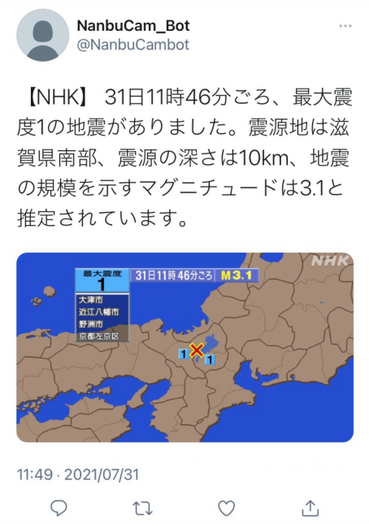
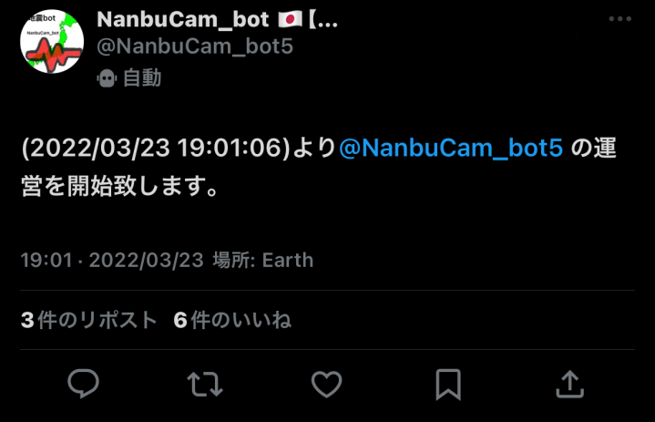
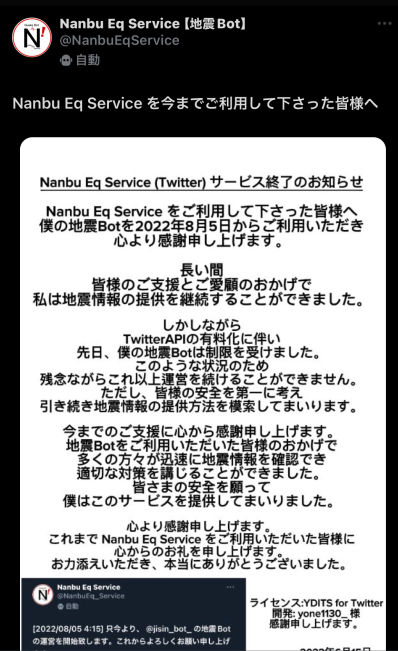
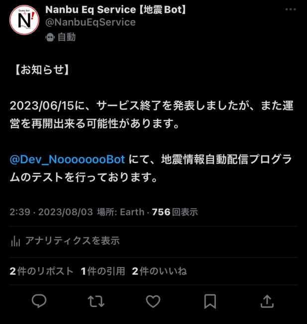
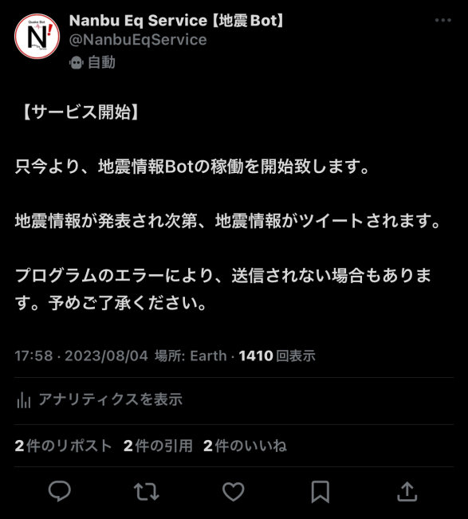
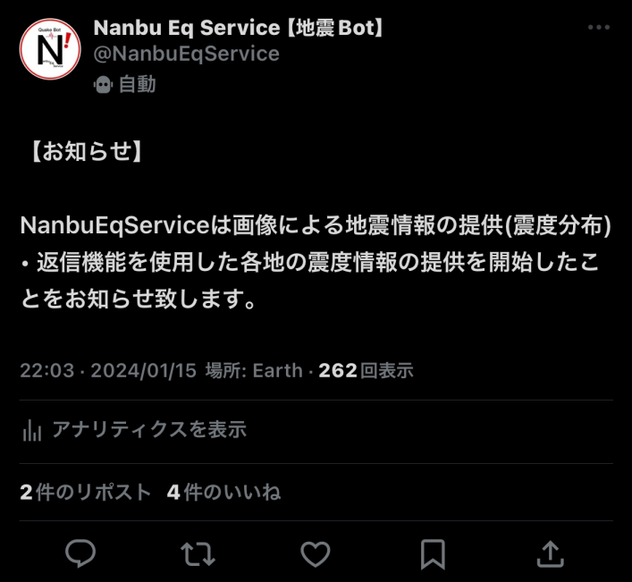
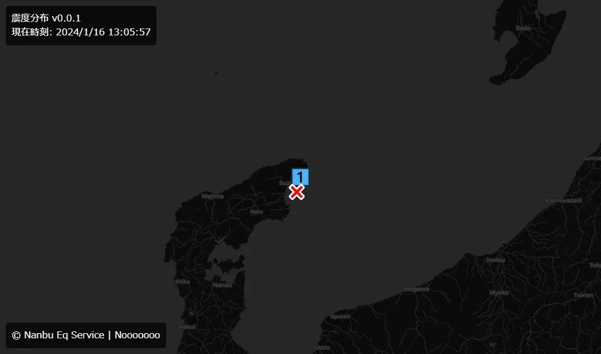
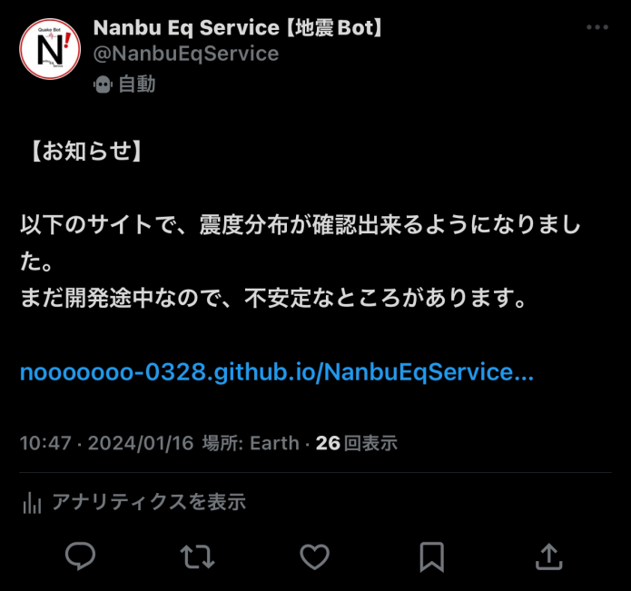
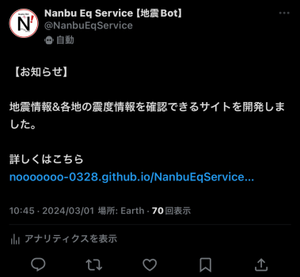
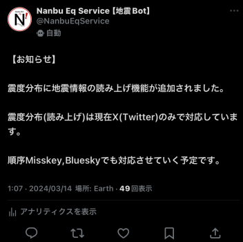

サービス開始 (2021/07/31～2021/08/31)
Nanhu Eq Service はサービス開始時、NanbuCam_Bot という名前で地震Botサービスを開始しました。
サービス休止 (2021/08/31～2022/03/23)
諸事情があり、サービス開始から1ヶ月後、サービスを休止しました。サービス復帰 (2022/03/23～2023/06/15)
新しいアカウントを作成し、YDITSのBotプログラムを貸してもらい、サービス復帰することができました。これをきっかけに、Noooooooがプログラムに興味を持つようになりました。

サービス終了 (2023/06/15)
TwitterAPI有料化に伴い、サービス終了を発表。※新アカウント
サービス再開 (2023/08/03～)
TwitterAPI有料化に伴い、サービス終了したがまた再開することを発表しました。
今回からNoooooooが1からプログラムを開発し運用するようになりました。
震度分布による情報提供を開始 (2024/01/15～)
震度分布による情報提供を開始しました。開発初期の震度分布

開発初期の震度分布
サイトから震度分布を確認できる Nanbu Eq Service for 震度分布 の提供を開始 (2024/01/16～)
サイトから震度分布を確認できるサイトの提供を開始しました。
サイトから地震情報&各地の震度情報を確認できる Nanbu Eq Service for 地震情報 の提供を開始 (2024/03/01～)
サイトから地震情報&各地の震度情報を確認できるサイトの提供を開始しました。
震度分布(読み上げ)による提供を開始 (2024/03/14～)
地震情報を読み上げし、震度分布と一緒に添付する投稿の提供を開始しました。
定期的に更新します (最終更新: 24/03/14)
更新しましたらお知らせいたします。以上
ここまで見てくださり、ありがとうございました。← NanbuEqServiceのサイトに戻る